design/layout.json と blender/cinema_spec.py で、設計図・Blender の組み立て・ワールドのコードが同じ数値を読む。
画像の案は雰囲気と作りの参考で、寸法は設計図が優先。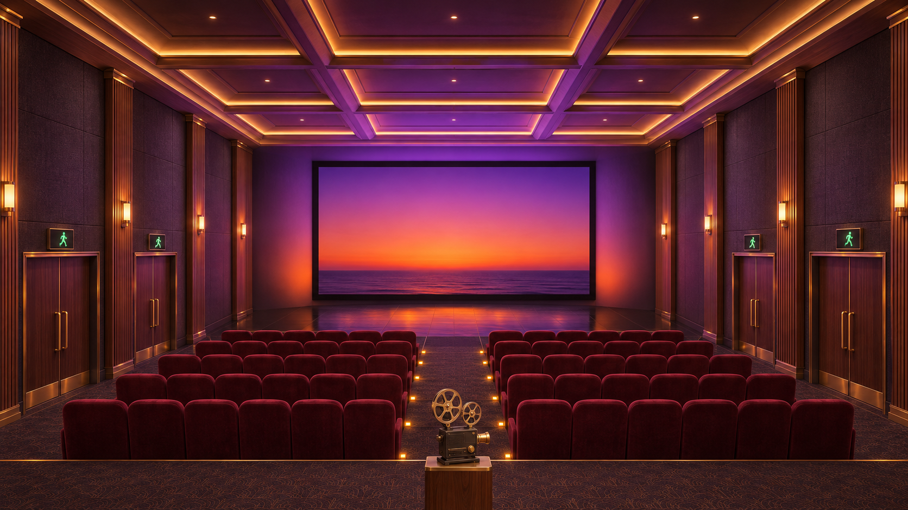
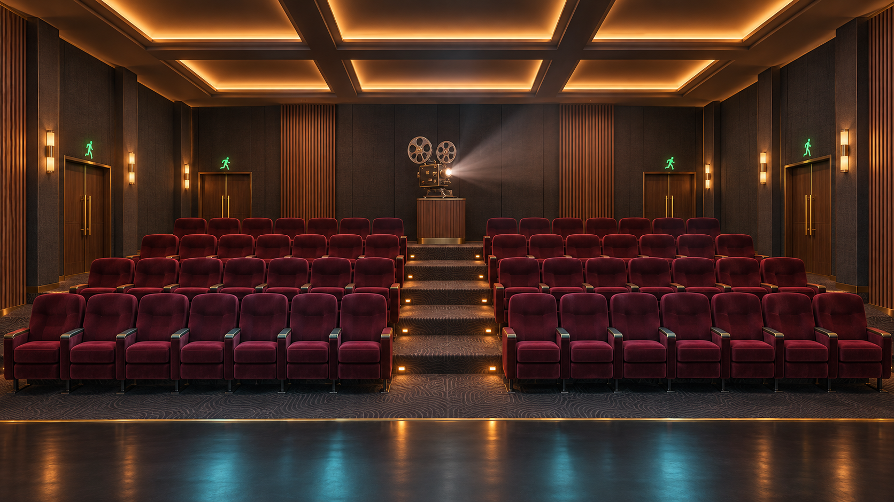
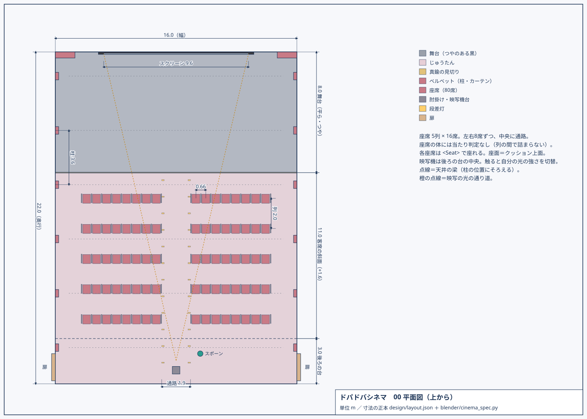
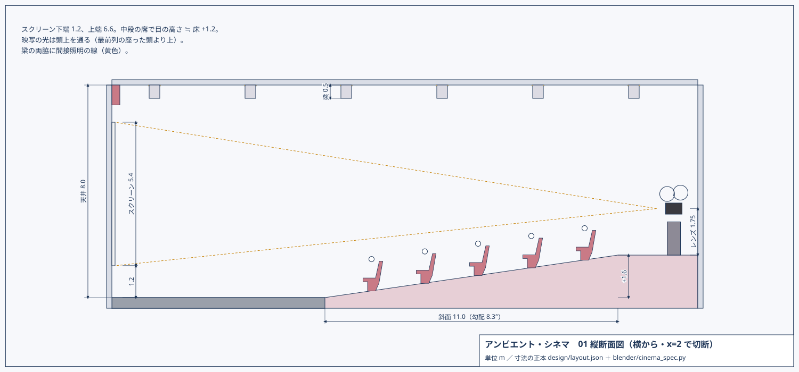
<Seat>）。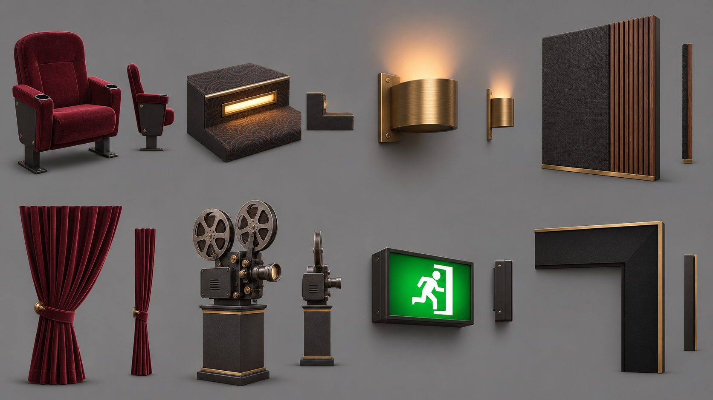
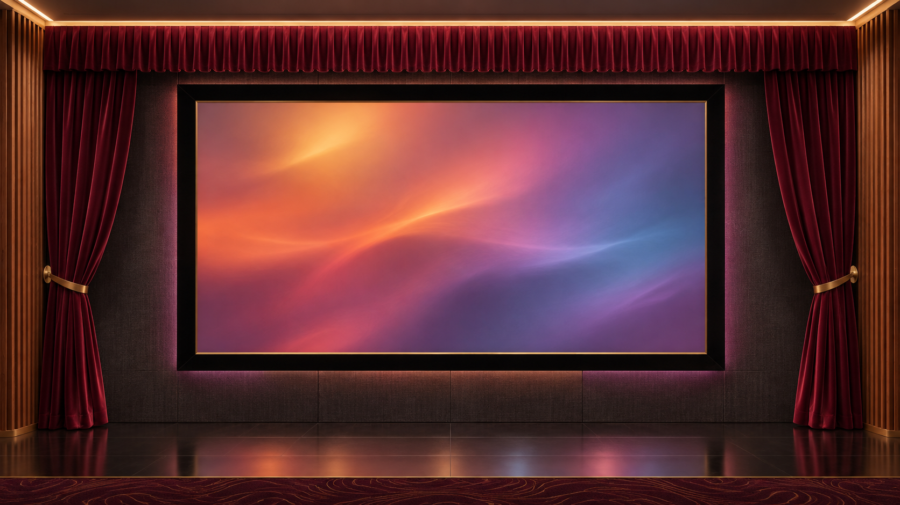
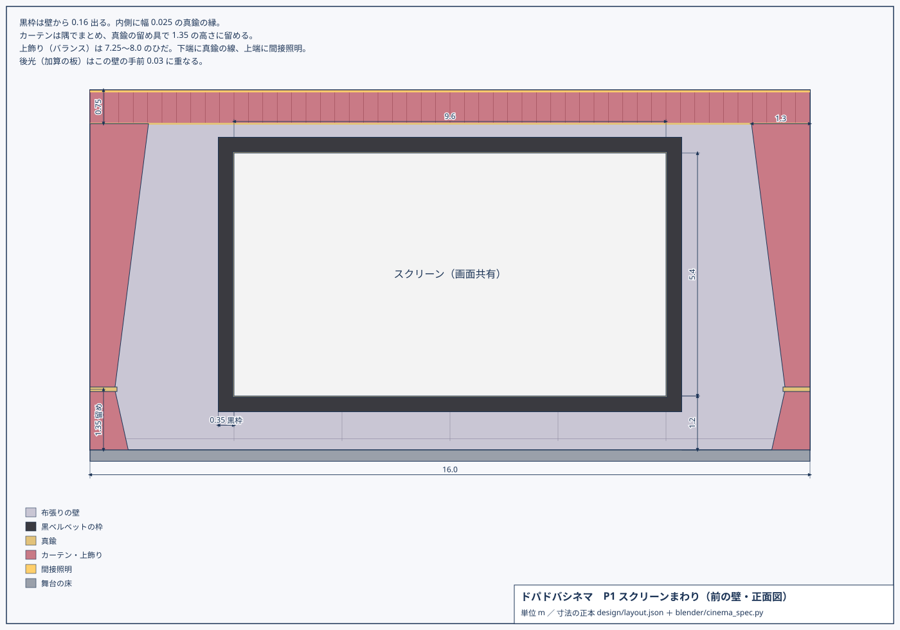
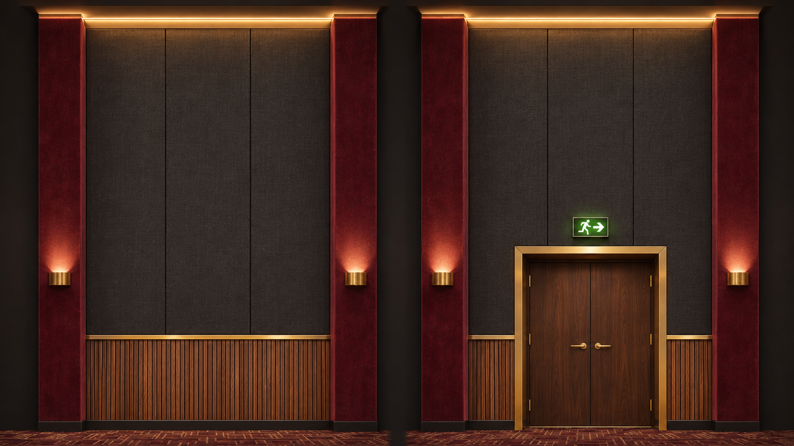
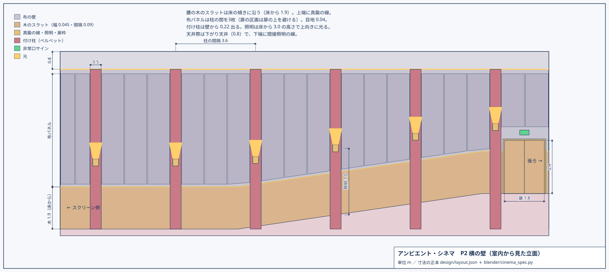
side_bays() と bay_panels() から。左右の壁は同じ関数で鏡像。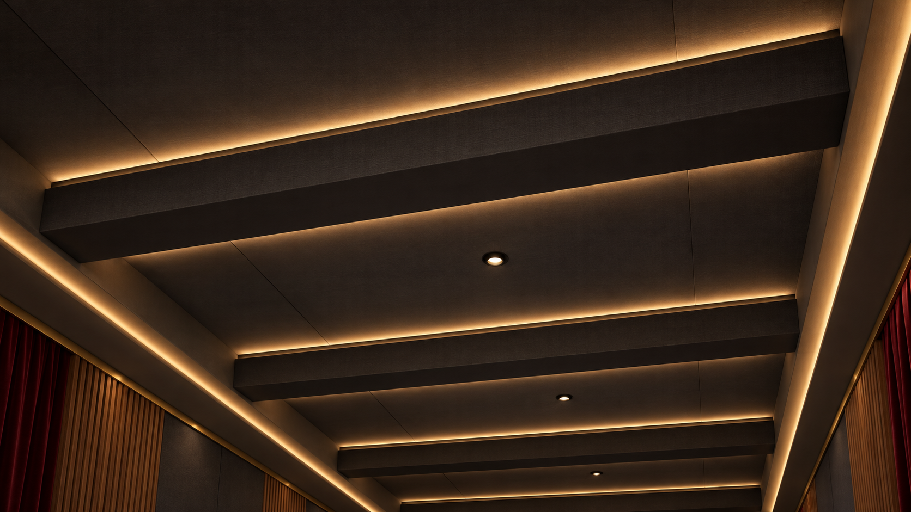
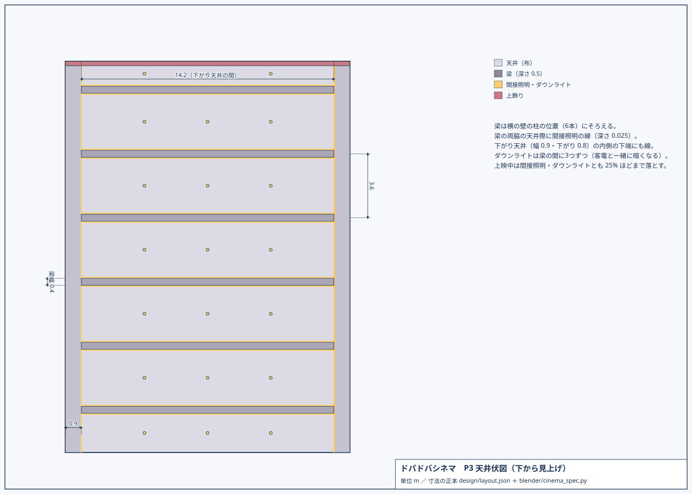
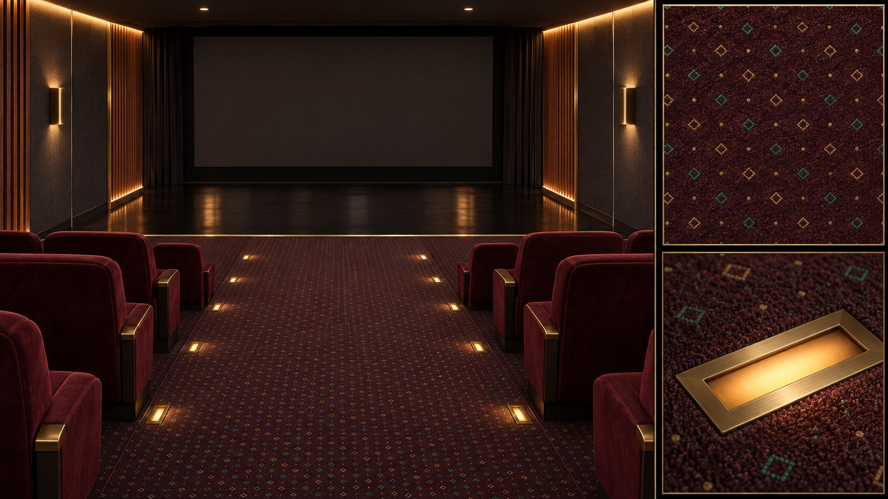
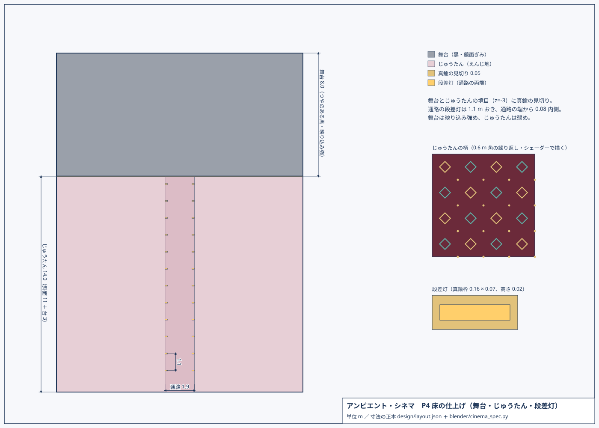
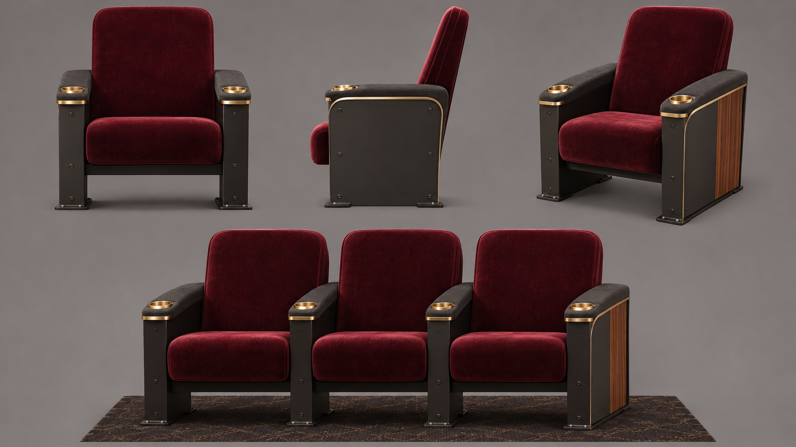
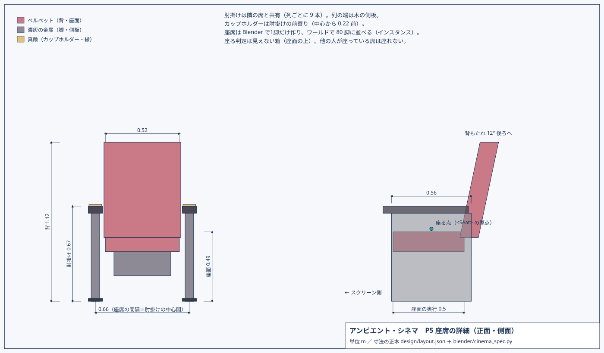
SeatProto）と肘掛け 1 本（ArmProto）だけ作る。並べるのはワールド側（インスタンス描画で 1 素材 1 回）。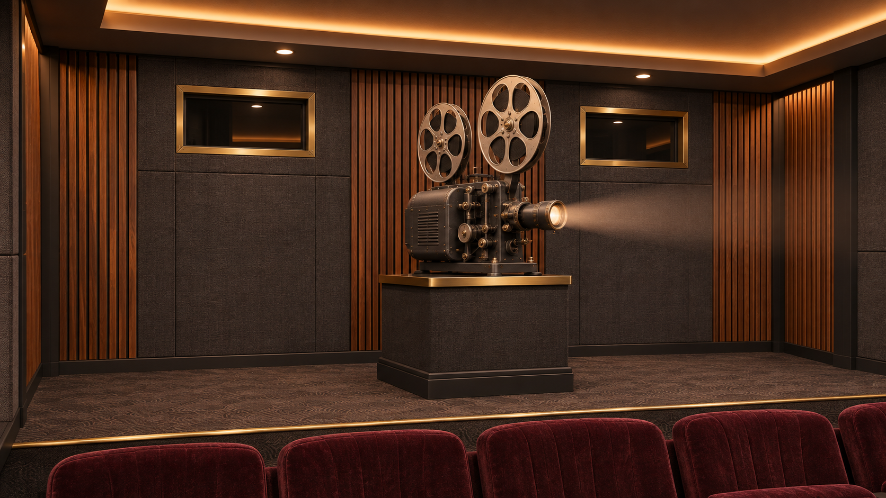
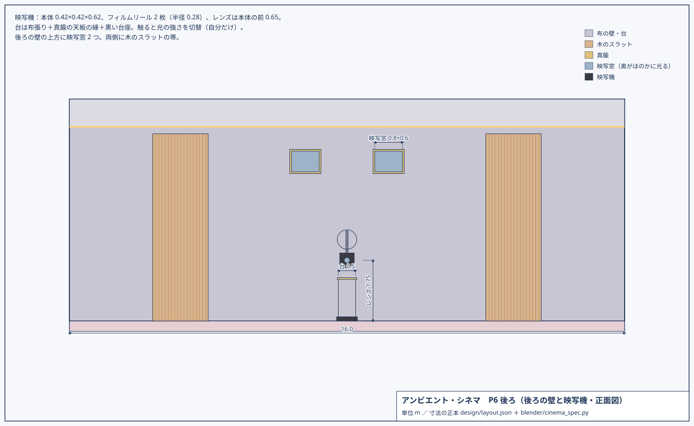
Projector）で書き出し、ワールドで触れる物にする。レンズの円盤（Projector_Lens）は映像の平均色で光らせる。| Blender の素材名 | 色 | ワールドでの見え方 |
|---|---|---|
AC_wall_fabric / AC_front_fabric | 濃灰の布 | 映像の光を受ける・映像を壁へ広げる（横・後ろの壁） |
AC_wood | くるみ材 | 映像の光を受ける・映像を広げる・ごく弱い映り込み |
AC_brass | 真鍮 | 金属：スクリーンと後光を色つきで映す |
AC_curtain | えんじのベルベット | 縁が明るむベルベット（柱・カーテン・上飾り） |
AC_seat_velvet / AC_seat_frame | 座席（ベルベット／濃灰の金属） | |
AC_stage | つやのある黒 | 映り込み強め・映像を広げる |
AC_carpet | えんじ | ひし形と点の柄（シェーダー）・映り込み弱め |
AC_ceiling / AC_beam | 映像の光を受ける・映像を広げる | |
AC_glow_* | 光る素材。間接照明・ダウンライト・壁の照明は上映中に暗くなる。段差灯と非常口は常に点く |
blender/build_cinema.py）：別シーン ambient_cinema に P1〜P6 を組み、素材ごとに 1 つのメッシュへまとめて public/ambient-cinema.glb に書き出す。座席・肘掛け・映写機は別のまとまり。<Seat>。